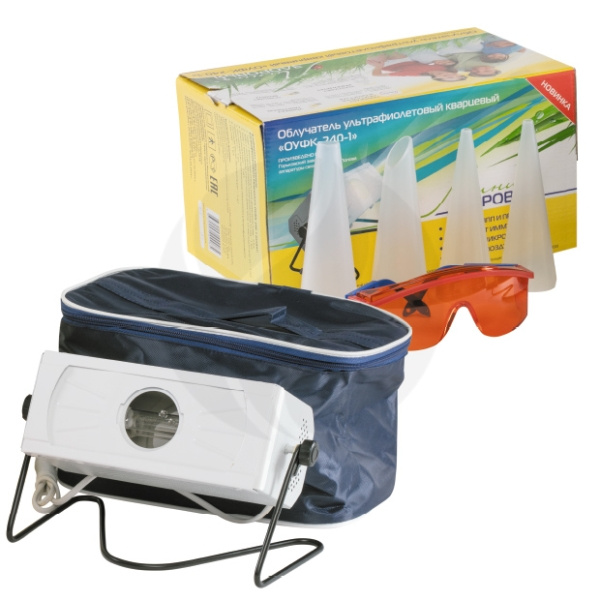
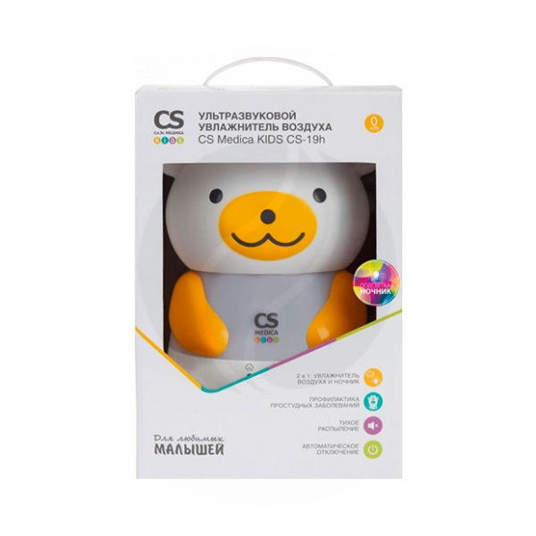

| 3453 |
Ультрафиолетовый облучатель ОУФК-240-1 с лампой повышенной мощности ДРТ-240 предназначается для проведения местных и локальных облучений у взрослых пациентов. Прибор со съемной передней панелью, четыре тубуса в комплекте.
Ультрафиолетовый облучатель ОУФК-240-1 эффективен при лечении некоторых заболеваний уха, горла, носа, а также фурункулеза, ОРЗ, различных кожных заболеваний, болезней суставов, трофических язв и др. Облучение кварцевой лампой положительно воздействует на обмен веществ, на кровообращение, усиливает сопротивляемость организма различным заболеваниям и инфекциям.
Облучатель с успехом может применяться и для дезинфекции помещений, т.к. в процессе его работы вырабатывается озон, губительный для микробов.
|
Облучатель ультрафиолетовый кварцевый ОУФК-240-1 |
 |
| 4860 |
Компактный и эффективный прибор для создания оптимального уровня влажности и здорового микроклимата в детской комнате.
Прибор предназначен для распыления воды в холодный пар, благодаря чему относительная влажность в помещении повышается до благоприятного уровня. Во время процедуры увлажнения улучшается качество воздушной среды, что предотвращает пересыхание слизистых оболочек и кожи. Помимо этого снижается концентрация микробов и пыли в воздухе, что позволяет вашему малышу расти более здоровым и крепким, избегать заболеваний дыхательных путей и заложенности носа, а также улучшить качества сна.
|
CS Medica KIDS CS-19h Ультразвуковой увлажнитель воздуха |
 |